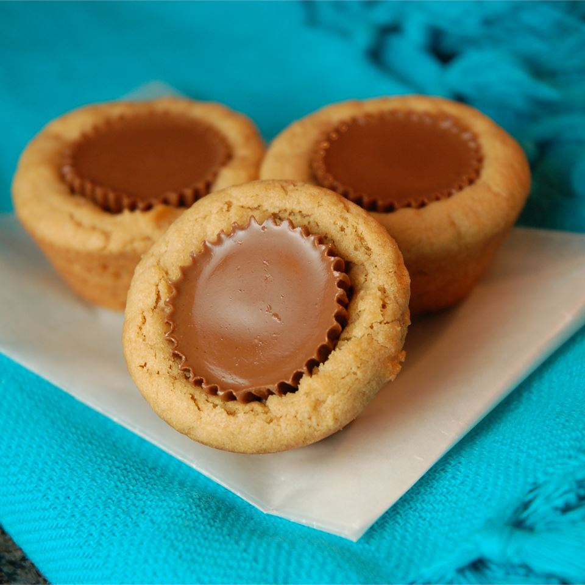

Peanut butter cup cookes
These cookies have a sweet peanut butter cup center

Ingredients
- 1 3/4 cups all-purpose flour
- 1/2 teaspoon salt
- 1 teaspoon baking soda
- 1/2 cup butter
- 1/2 cup white sugar
- 1/2 cup peanut butter
- 1/2 cup packed brown sugar
- 1 egg
- 1 teaspoon vanilla extract
- 2 tablespoons milk
- 40 miniature chocolate covered peanut butter cups, unwrapped
Steps
- Preheat oven to 190°C. Sift together the flour, salt and baking soda.
- Cream together the butter, sugar, peanut butter and brown sugar until fluffy. Beat in the egg, vanilla and milk. Add the flour mixture; mix well. Shape into 40 balls and place each into an ungreased mini muffin pan.
- Bake at 375 degrees for about 8 minutes. Remove from oven and immediately press a mini peanut butter cup into each ball. Cool and carefully remove from pan.